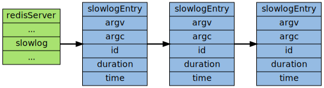

慢查询日志
慢查询日志 是 Redis 提供的一个用于 观察 系统性能 的功能， 这个功能的实现非常简单
先介绍和慢查询功能相关的数据结构和变量 然后介绍 Redis 是如何记录命令的执行时间 最后介绍如何为执行超过限制事件的命令记录慢查询日志的
数据结构
每条慢查询日志都以一个 slowlog.h/slowlogEntry 结构定义：
typedef struct slowlogEntry { robj **argv; // 命令参数 int argc; // 命令参数数量 long long id; // 唯一标识符 long long duration; // 执行命令消耗的时间，以纳秒（1 / 1,000,000,000 秒）为单位 time_t time; // 命令执行时的时间 } slowlogEntry;
记录服务器状态的 redis.h/redisServer 结构里保存了几个和慢查询有关的属性：
struct redisServer { // ... other fields list *slowlog; // 保存慢查询日志的链表 long long slowlog_entry_id; // 慢查询日志的当前 id 值 long long slowlog_log_slower_than; // 慢查询时间限制 unsigned long slowlog_max_len; // 慢查询日志的最大条目数量 // ... other fields };
- slowlog 属性是一个 链表 ， 链表里的每个 节点 保存了一个 慢查询日志结构 ， 所有日志按添加时间 从新到旧 排序，新的日志在链表的左端，旧的日志在链表的右端
slowlog_entry_id 在创建每条新的慢查询日志时 增一 ，用于产生慢查询日志的 ID
这个 ID 在执行 SLOWLOG RESET 之后会被重置
- slowlog_log_slower_than 是用户指定的 命令执行时间上限 ，执行时间大于等于这个值的命令会被慢查询日志记录
- slowlog_max_len 慢查询日志的 *最大数量*，当日志数量等于这个值时，添加一条新日志会造成最旧的一条日志被删除
下图展示了一个 slowlog 属性的实例：

记录慢查询日志
在每次执行命令之前， Redis 都会用一个参数 记录 命令执行前的时间 在命令执行完之后， 再计算一次当前时间， 然后将两个时间值相减， 得出执行命令所耗费的时间值 duration ， 并将 duration 传给 slowlogPushEntryIfNeed 函数。
- 如果 duration 超过服务器设置的执行时间上限 server.slowlog_log_slower_than 的话， slowlogPushEntryIfNeed 就会 创建 一条新的 慢查询日志 ， 并将它 加入 到 慢查询日志链表 里
可以用一段伪代码来表示这个过程：
def execute_redis_command_with_slowlog(): start = ustime() # 命令执行前的时间 execute_command(argv, argc) # 执行命令 duration = ustime() - start # 计算命令执行所耗费的时间 if slowlog_is_enabled: slowlogPushEntryIfNeed(argv, argc, duration) def slowlogPushEntryIfNeed(argv, argc, duration) # 如果执行命令耗费的时间超过服务器设置命令执行时间上限 # 那么创建一条新的 slowlog if duration > server.slowlog_log_slower_than: log = new slowlogEntry() # 创建新 slowlog # 设置各个域 log.argv = argv log.argc = argc log.duration = duration log.id = server.slowlog_entry_id log.time = now() server.slowlog.append(log) # 将新 slowlog 追加到日志链表末尾 server.slowlog_entry_id += 1 # 更新服务器 slowlog
操作
针对慢查询日志有三种操作，分别是 查看 , 清空 和 获取日志数量 ：
- 查看日志：在日志链表中遍历指定数量的日志节点，复杂度为 \(O(N)\)
- 清空日志：释放日志链表中的所有日志节点，复杂度为 \(O(N)\)
- 获取日志数量：获取日志的数量等同于获取 server.slowlog 链表的数量，复杂度为 \(O(1)\)
小结
- Redis 用一个链表以 FIFO 的顺序保存着所有慢查询日志
每条慢查询日志以一个慢查询节点表示，节点中记录着执行超时的命令、命令的参数、命令执行时的时间，以及执行命令所消耗的时间等信息
Previous：订阅与发布 Home：功能实现